University Projects from 2025 and 2026. This is a small overview of a few notable projects and concepts that I created for various assignments.
Restaurant Websitep>
Design for a fictional ramen restaurant.
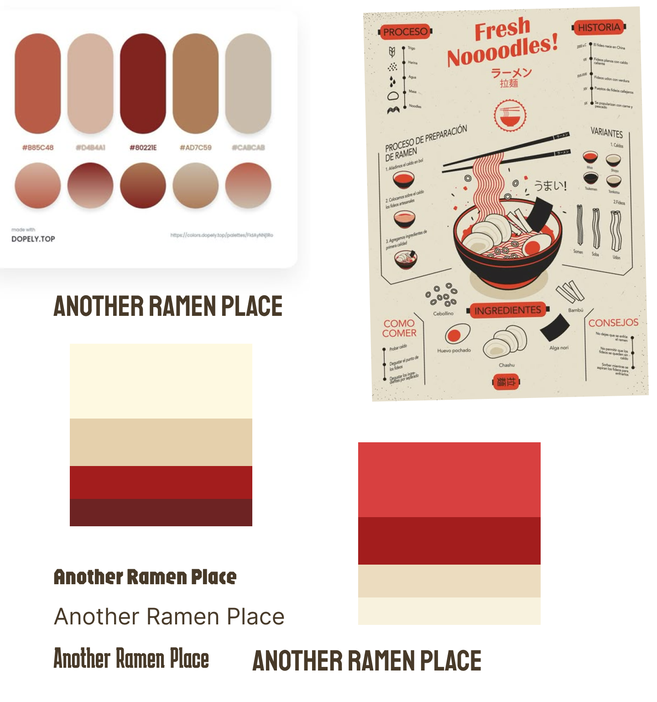
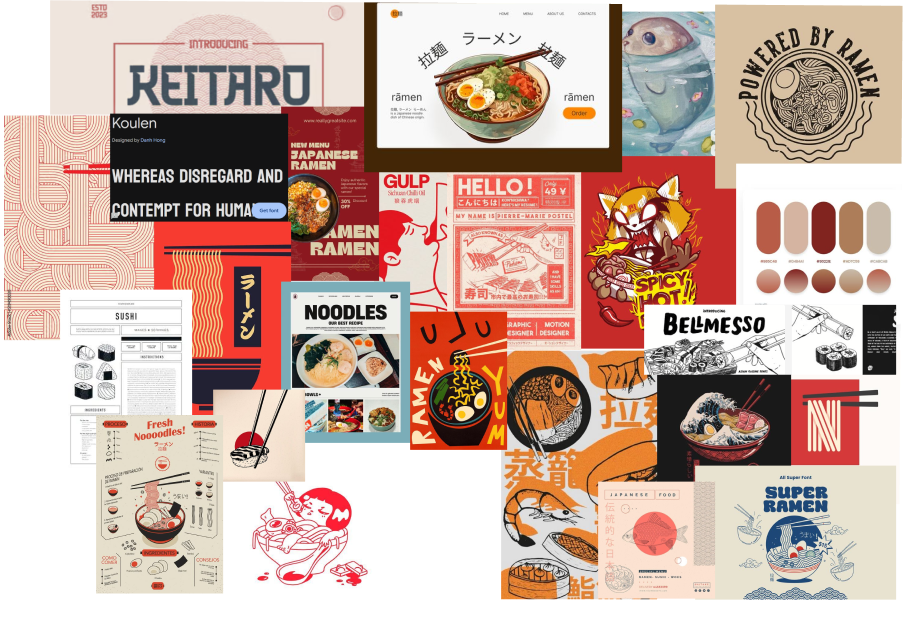
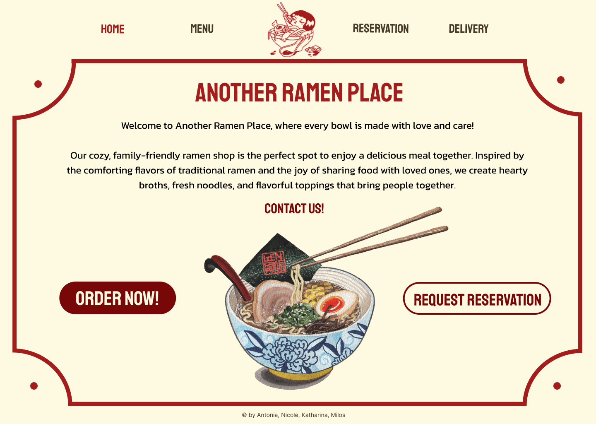
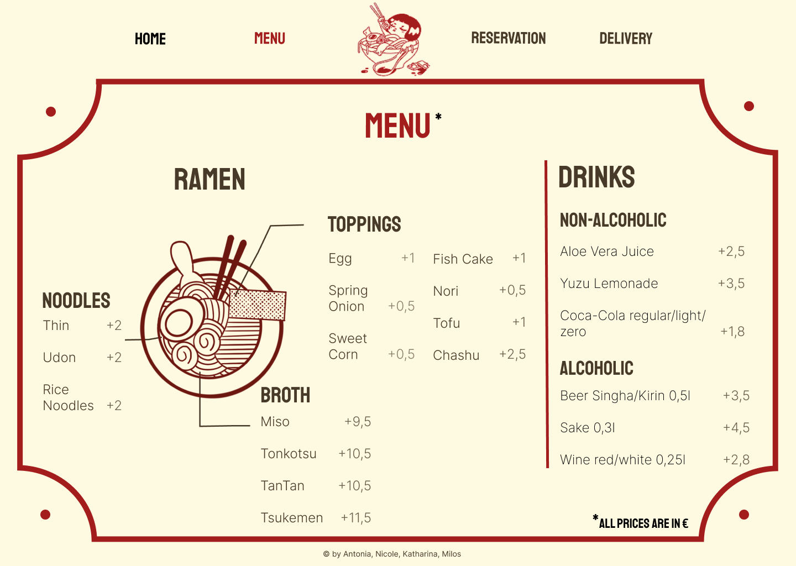
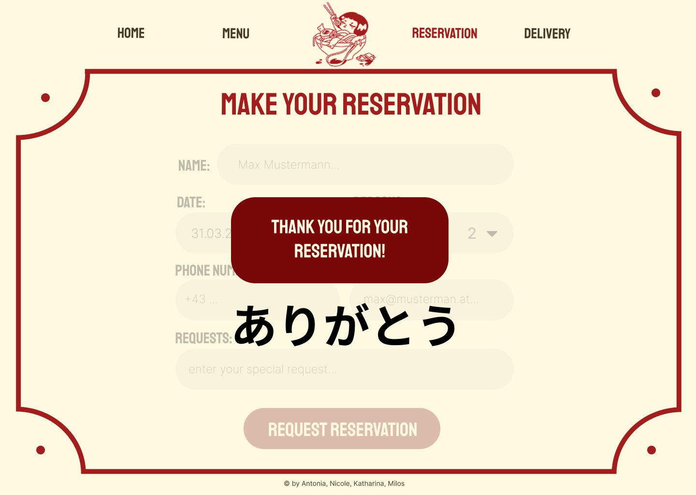
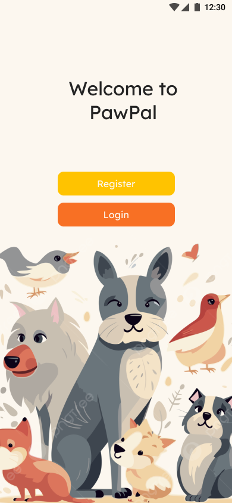
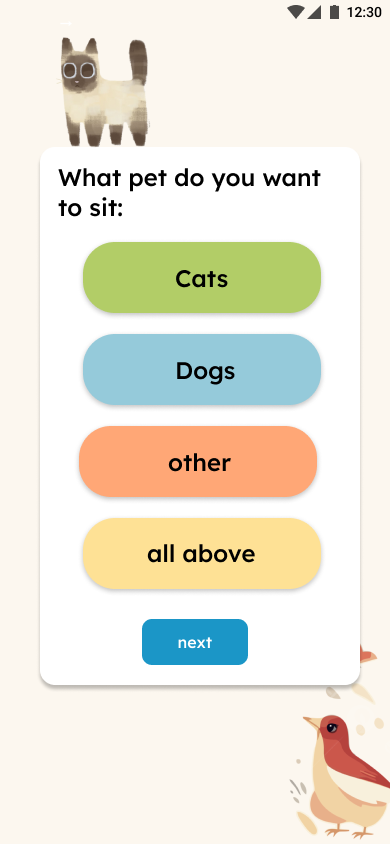
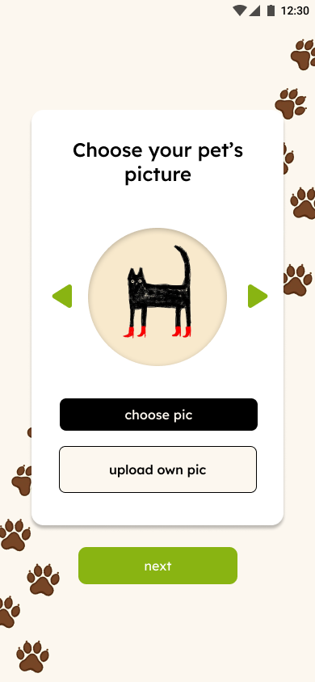
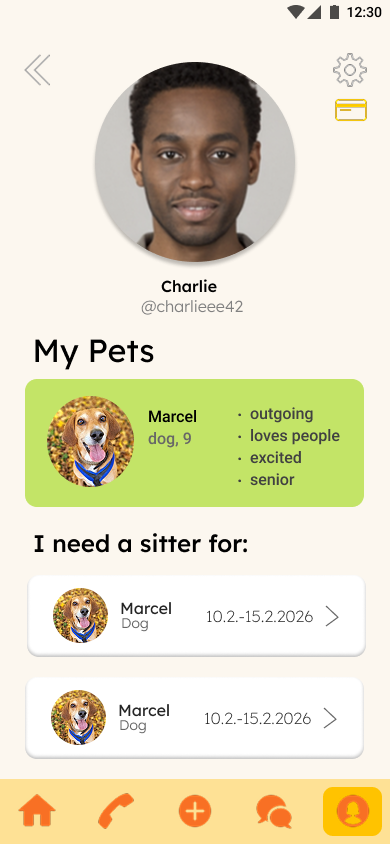
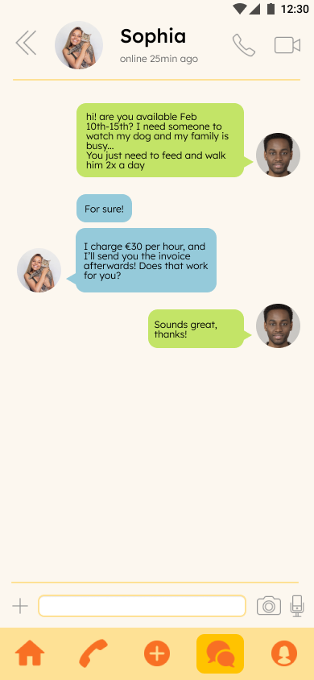
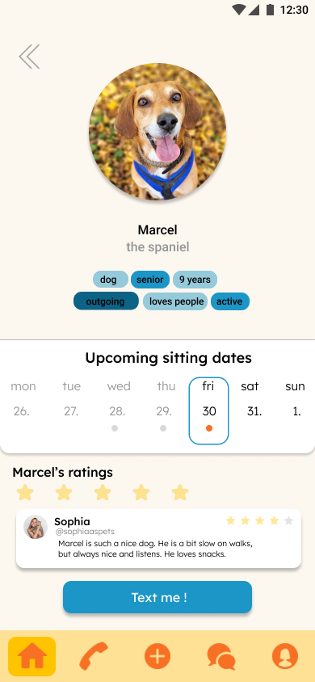
Webpage Screendesign
This is my first ever screendesign done in 2024 from the very beginning of my studies. Oh, how far we've come!
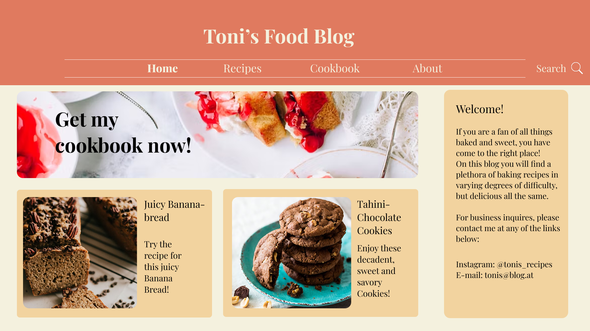
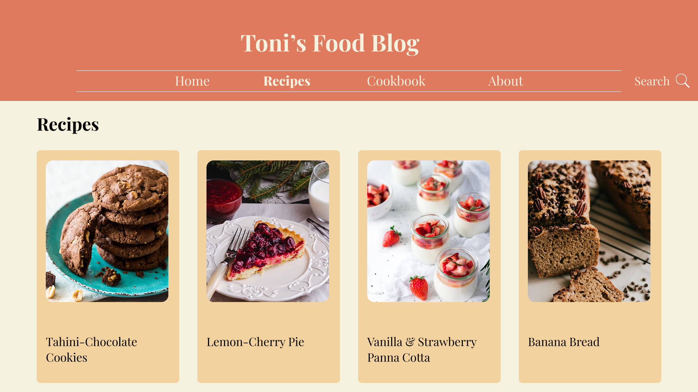
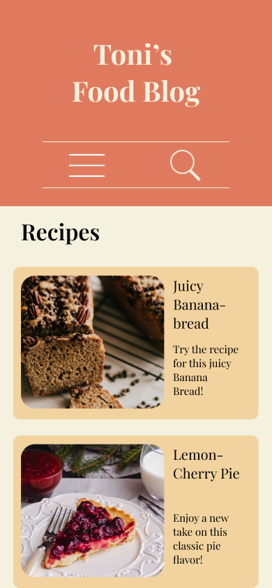
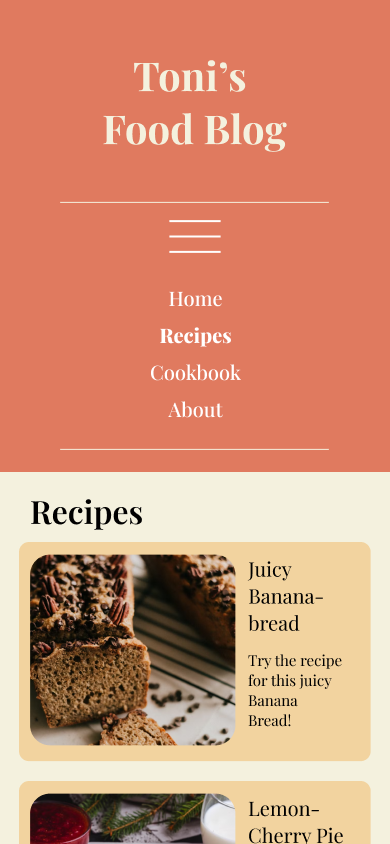